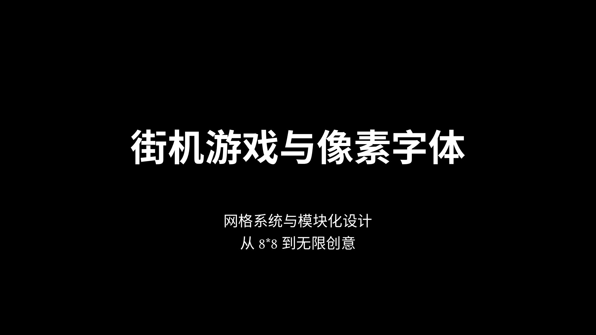
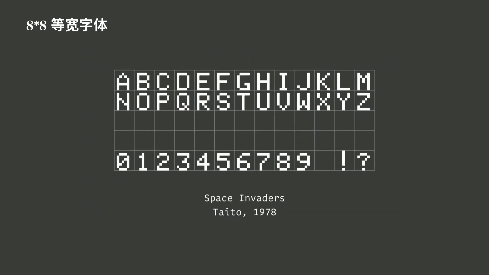
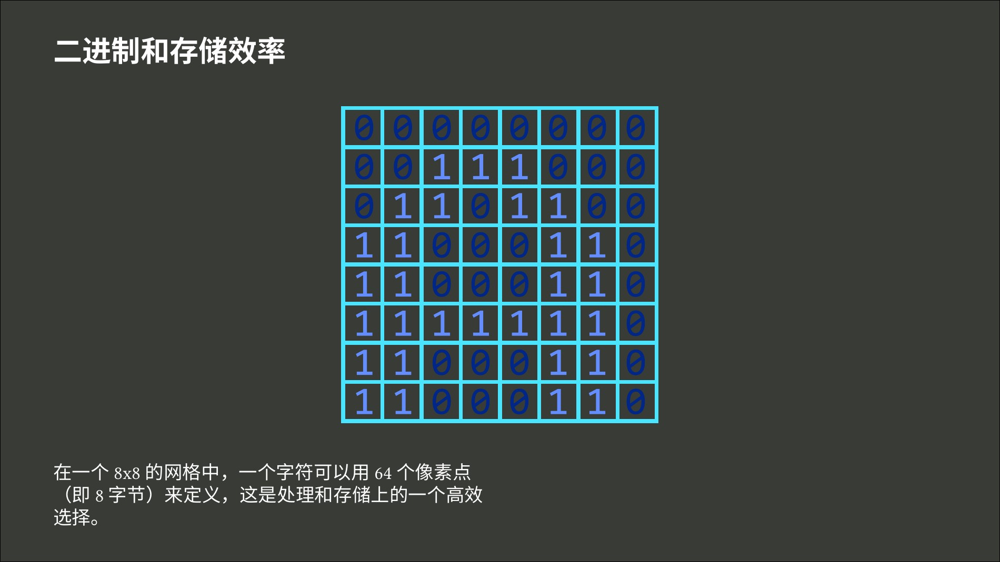
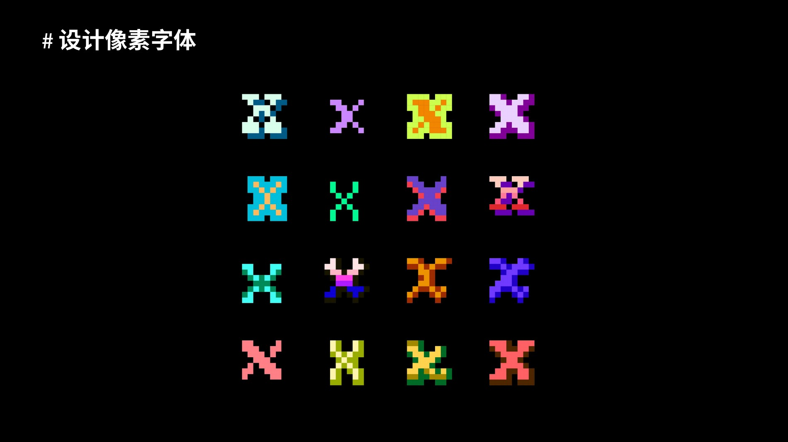
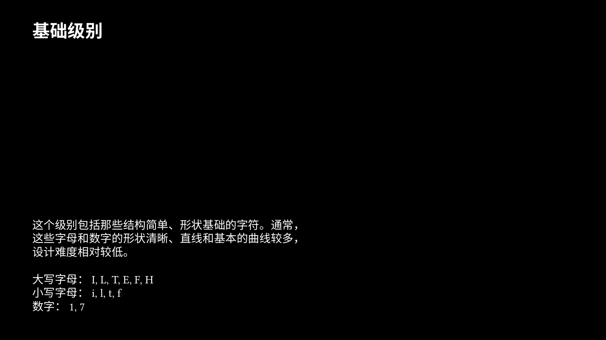
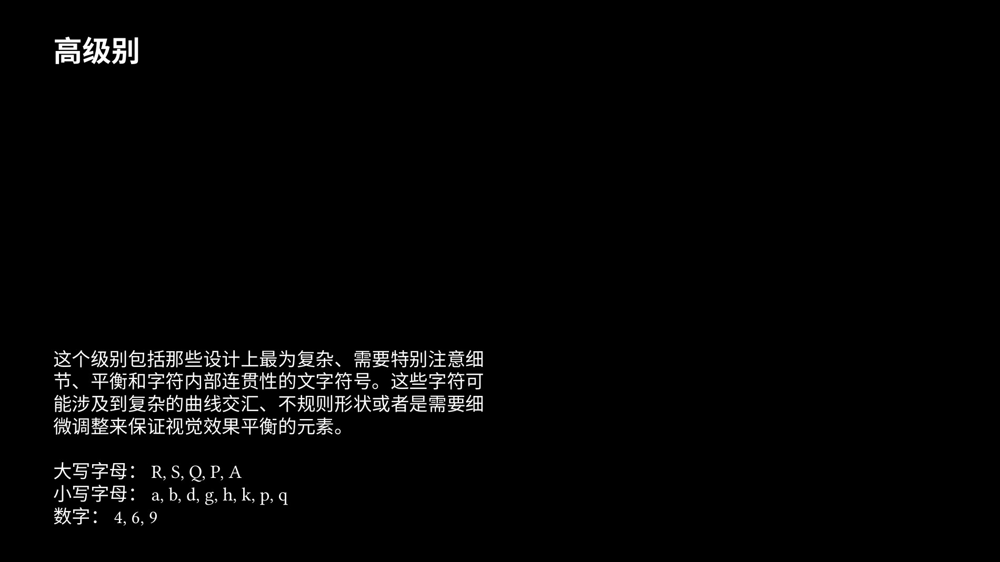
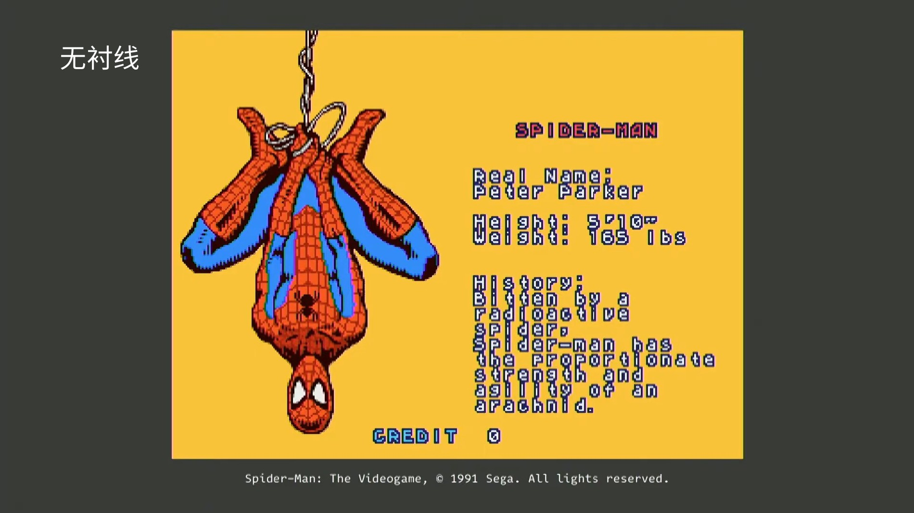

街机游戏与像素字体
我设计了一堂连接街机文化与字体实践的公开课。课程从游戏厅与街机的视觉经验展开，再把问题收窄到屏幕上的一个字符。参与者在有限网格中安排笔画，比较字形在不同处理下的可读性。
练习选用 8×8 网格，以 64 个位置的亮灭组织字符。这个限制让参与者能够直接观察笔画的厚度、留白、曲线和斜线如何相互影响。课程也展示其他网格比例，方便比较相同字符在不同尺寸下的变化。













